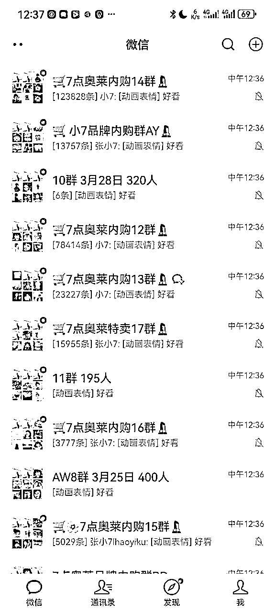
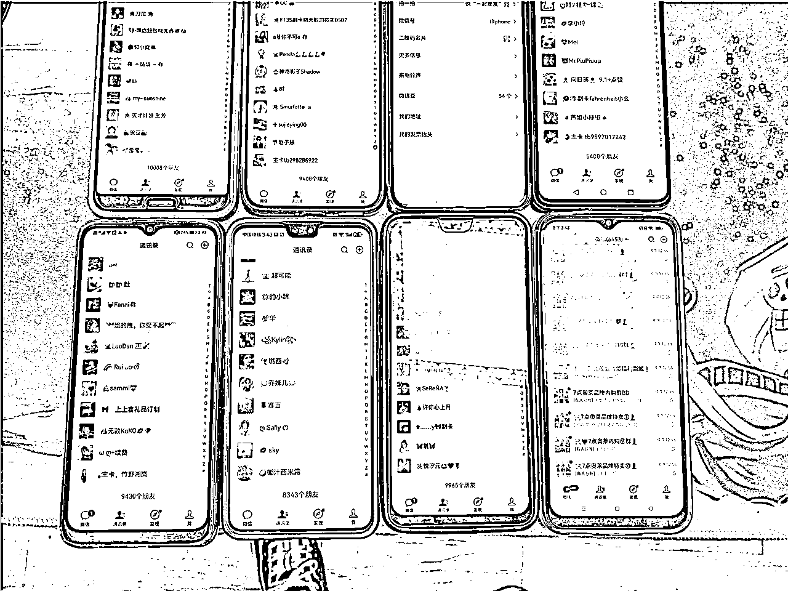
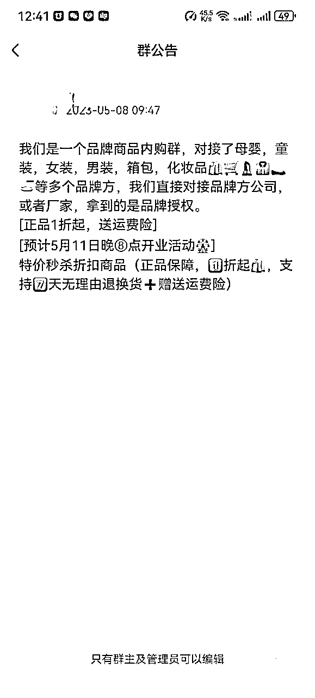

来源：https://xj40e92zg0.feishu.cn/docx/BVORdBGGIoFkIixSXuPcewaJnsb
大家好，我是李同学，目前私域团队月销在千万左右，自营的私域群月销在50到60万。
之前有幸在星球里面给大家分享过2次有关自己是怎么做私域群的经验，上一次分享还是去年11月，这次五一假期期间，我把做私域群的流程更加细化了一下。
有这边方面需要的小伙伴可以直接按照分享的步骤去做落地，希望对生财圈友里面同样是做私域卖货、快团团群、特卖群的圈友能有所借鉴。
我的群名称叫：7点xx内购16群
—————————————————
群名称拆解：


我们是一个品牌商品内购群，对接了母婴，童装，女装，男装，箱包，化妆品🛍️🛒💄👔🥿🍜等多个品牌方，我们直接对接品牌方公司，或者厂家，拿到的是品牌授权。
[正品1折起，送运费险]
[预计5月11日晚⑧点开业活动🎡]
特价秒杀折扣商品（正品保障，1⃣️折起🛍️，支持7⃣️天无理由退换货➕赠送运费险）
—————————————————
群公告拆解：
1、根据自己需要自己改吧

我是悠悠，我们团队对接了特卖商品，邀请您进我们品牌内购群，咱们的群里每天都会发布 大牌化妆品、大牌女装、母婴产品等等，价格非常低，是商场的1-3折！
现在都是春季新款，库存下的快！我们每天都有大量上新！
所有商品支持七天无理由退换货，赠送8元运费险，欢迎比价比质量，保证正品，支持专柜验货！
——————————————————————
话术拆解：
群人数多运营成本低，你运营1个400人的群跟4个100人的群那人力成本是完全不一样的；
那你拉群的时间太长的话，刚开始进群的人，已经忘记你这个群是干嘛的、自己为什么会进你这个群了，要趁着大家都还有印象，及时的开业，开群；
①、朋友圈文案＋进群二维码；
②、私聊群发文案＋进群二维码；
这两种都是通过扫码进群，只能群人数没达到200人才能进，自己测试。
这些我都整理在微信聊天记录合集里面，内容去聊天记录合集里面去找，更方便。
——————————————————————
开业活动拆解：
凡事站在用户的角度去思考，现在大家时间都很忙，没人有空闲下来听你长篇大论，能不说就不说，别多浪费任何一点别人的时间。
①开业是我们最好的、唯一一次有机会跟用户互动的机会，有托就会搞得热闹一点，不然到时候会冷场。
②、任何互动，无论是拍一拍、还是猜价格、领赠品，都让托先参与进来，前面有两三个人参加了，用户更容易跟着参与进来。
③你能找几个就找几个，找不到就算了，像我自己的人，一般是8到10个托，很热闹。
①、知道什么是拍一拍吗？双击群成员的头像，就会弹出拍一拍；
②、拍一拍的优点是让在看群消息的群成员能看到互动效果，但是又不会有消息刷屏打扰大家，也不会打扰那些没进来看群的人；
③、拍一拍还可以设置烟花特效，很美的。
④、我的拍一拍文案是：“小7带我省钱“[烟花]”。
⑤、拍一拍设置的位置是：微信→我→点上面微信号这个区域→拍一拍，点进去设置。
晚上789，自己选吧；
预热提醒3次左右。
①、倒计时一小时预热一次；
②、十分钟预热一次；
③、开业时@全体成员；
你看看你自己预算是多少，这个预算根据群人数来
有那个群设置免打扰的表情包，发几次：
①、倒计时预热可以提醒一下。
②、正式开业时发一次。
③、开业结束提醒发一次。
@全体成员用1次到2次就够了，别用太多，开业当时肯定要用一次。如果你拉群时间很长，你倒计时一小时的时候也可以@一次全体成员。
福利就是红包、实物赠品。比如我开业要讲4个要点（这个对用户来说就是广告），我每个要点都必须要准备一个福利吸引回馈大家。
前面说开业要简短，但是该省的是绝对不能省；比如：
①、介绍清楚你是谁，跟用户建立信任。
②、用户为什么要在你的群里买东西？便宜
③、靠不靠谱，是不是正品，有没有保障？
④、要怎么买？怎么售后？
我之前开业免费送选的一款纸巾，一大包，十小包，成本是5.5元。
操作的步骤是：我在预热的时候我会发这个商品的介绍给人看，看起来这个礼物很不错，肯定不会让用户觉得只值几块钱。
之后活动的时候限时5分钟，5分钟内下单的人全部免单，你先自己花5.9买下来，我再把5.9在群里以专属红包的形式发给你。
这个活动的优点是：
①、作为开业的福利送给大家，增点彩头；
②、让新用户在群里下一单，熟悉下单的流程，这样吸引别人以后继续下单；
③、你在群里直接给人发红包，别人真的领到免单了，会对你更加信任，知道你没骗人；
④、如果你有用户号，你以用户的身份分享纸巾下单二维码给别人，如果是新用户下单了，你还可以得1000个积分。1000积分差不多是10元钱，这样你不仅不亏钱，还能赚钱；
缺点：
①、我搞了一些群的送礼品以后，我发现退群严重，可能对于有一些真想买东西不爱贪便宜的人来说，你搞这些没价值的礼品人家不需要，反而耽误人家时间了。
②、参与人很少，刚开始策划，我以为这个活动特别劲爆，还怕成本搞太大，结果实际是每次参与的人数能有十个真实的，就都还是不错的，要弥补这点，就是必须多上托，先搞至少三个托买了发群里，给托返红包，让别人觉得是真实的、跟风心理，也参与进来。
所以，这个活动我大概自己做了十个群左右，后面我是取消了做这个活动了的，自己甄别要不要搞。
就是选个有性价比的商品，发产品图在群里，让大家猜这个商品的价格，时间到了，最接近的一个发6.6或者8.8红包。
①、我开业一般做2个猜价格的活动，选品牌的、高性价比的。
②、同样让托多参与进来。
③、倒计时表情包，有那种1分钟倒计时表情包，直接丢到群里就可以计时，就一分钟，别搞太长。
④、猜完以后吧购买链接发群里，之后让托在群里问：这个是可以直接就买吗？这个是真的吗？不合适能不能退？之类的。
之后让托买一单，晒单截图到群里。
晒单发红包，告诉大家群开业活动，凡是在群里消费的，截图订单到群里，就发一个红包。
①、红包金额：0.88到2.88都行，人家买的贵，你赚得多的，发1.88；前期不积极也可以发大点；金额小就发0.88.
②、先让托参加进来，好像顾客们跟风起来晒单。